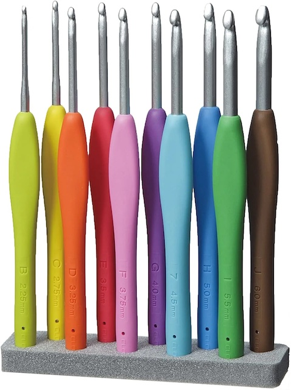
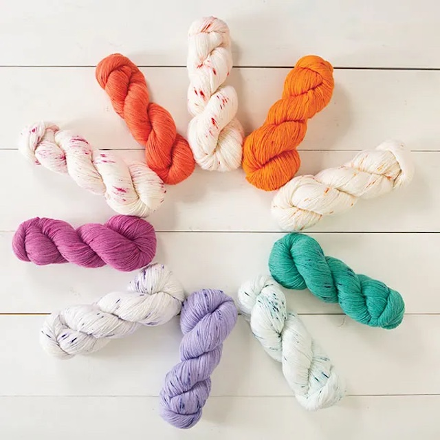
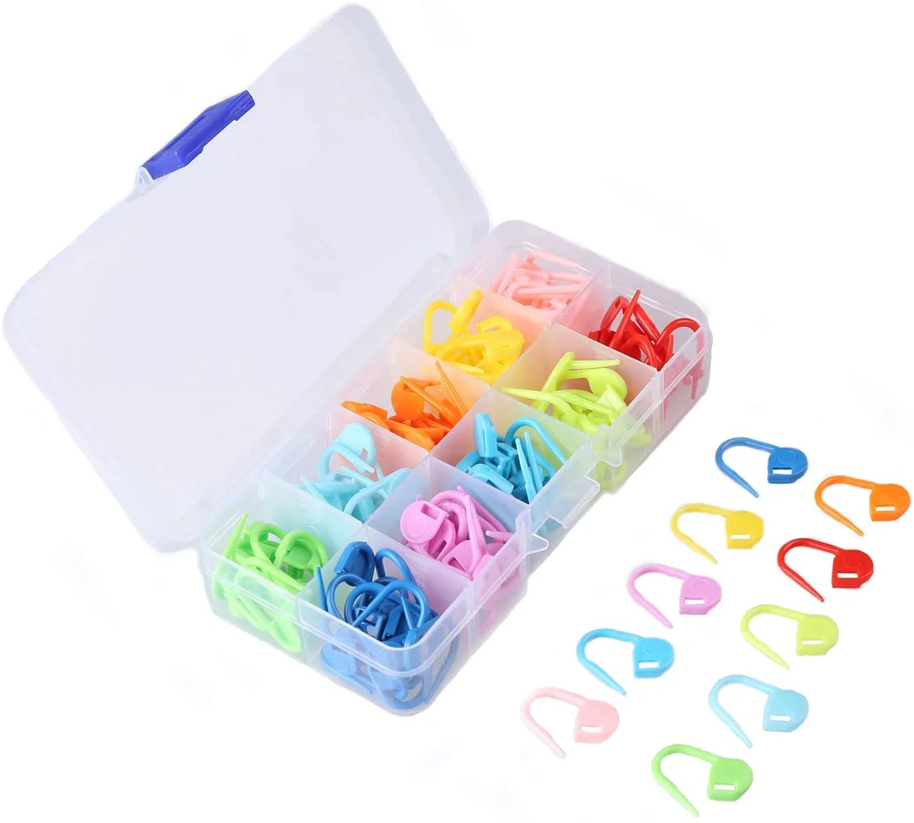
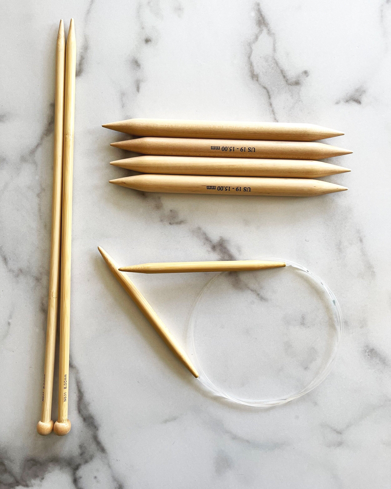

It is my guide to the most important knitting accessories and tools that i use. Table link
Crochet hooks are a great tool for picking up dropped stitches and, who knows, maybe even giving crochet a go. Also crochet hook is a tool used to create loops in thread or yarn and to interlock them into stitches. More...
You can find yarn in a variety of synthetic and natural fibers, like cotton, acrylic, silk, and wool. I recommended learning with wool or acrylic-blend yarns, because they have a bit more bounce and stretch than cotton yarns. For your first few projects, I recommend choosing a smooth, medium-weight yarn in a lighter color. More...
Stitch markers are small tools that you will use to mark your stitches as you crochet. You can use stitch markers to mark the beginning of a round, the end of a row, or to keep track of increases and decreases. More...
There are five types of knitting needles: straight, circular, interchangeable, double-pointed, and cable. They are usually made of wood, metal, or plastic. Generally speaking, straight needles are for flat knitting, DPNs are for knitting in the round, and circular needles are for both. More...
